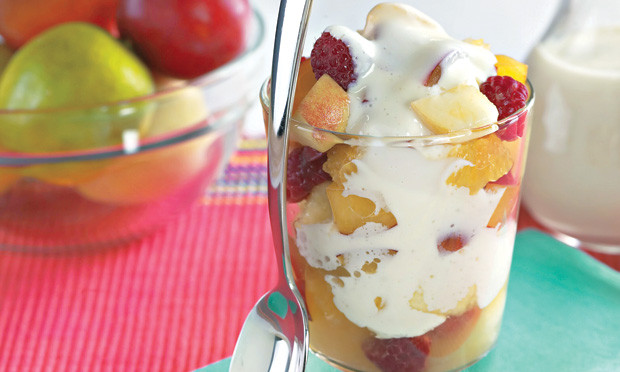
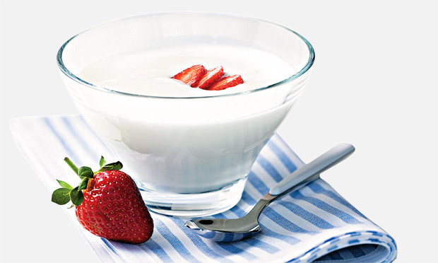

Bolo Amanteigado com Chocolate Branco
Ingredientes
150 gramas de chocolate branco derretido picado;
1/4 xícara (chá) de açúcar;
100 gramas de manteiga amolecida;
2 ovo batido;
1 1/4 xícara (chá) de farinha de trigo;
1 colher (sobremesa) de fermento químico;
Modo de preparo
Unte e forre com papel manteiga a base e as laterais de uma forma retangular de 20cm X 10cm. Reserve.
Derreta o chocolate em banho-maria e reserve.
Em uma tigela, misture o açúcar e a manteiga até obter uma massa cremosa.
Adicione os ovos e a farinha de trigo peneirada aos poucos.
Junte o chocolate derretido e o fermento, misturando delicadamente.
Coloque a massa na forma reservada e asse no forno, preaquecido a 180ºC, por 35 minutos ou até que a massa esteja firme.
Deixe amornar e desenforme.

Salada de Frutas com Creme Especial
Ingredientes
1 lata de leite condensado;
3 colheres (sopa) de suco de limão;
200 iogurte natural;
1 raspa de limão;
Frutas de sua preferência picadas;
Modo de preparo
No liquidificador, bata o leite condensado com o suco de limão durante 3 minutos ou até ficar encorpado.
Acrescente o iogurte, as raspas de limão e bata até incorporar ao creme.
Distribua as frutas em taças e cubra com o creme.
Leve para gelar.

Iogurte Caseiro
Ingredientes
1 litro de leite desnatado;
1/2 copo de iogurte desnatado natural;
1 caixa de gelatina diet com o sabor da sua preferência;
Modo de preparo
Ferva o leite e espere amornar.
Coloque em uma vasilha rígida e tampada.
Misture o iogurte natural ao leite e mexa até dissolver bem.
Tampe a vasilha novamente, embrulhe em um pano de prato e deixe descansar por um dia.
Não mexa na vasilha no período de descanso.
Leve à geladeira.
Prepare a gelatina diet conforme as instruções da embalagem e misture ao iogurte pronto.
Conserve na geladeira até a hora de servir.
Torrada com Leite Condensado
Ingredientes
2 xícaras (chá) de farinha de trigo;
1 colher (chá) de sal;
1/2 lata de leite condensado;
1 raspa de Laranja;
2 colheres (sopa) de óleo;
3 ovo;
1 xícara (chá) de leite;
Modo de preparo
No liquidificador, bata a farinha de trigo, o sal, o leite condensado, as raspas de casca de laranja, o óleo, os ovos e o leite.
Faça as torradas em um aparelho próprio ou, se preferir, faça panquecas numa frigideira antiaderente, untada com óleo.
Regue generosamente com o leite condensado e sirva logo em seguida.
Waffle de Chocolate com Frutas
Ingredientes
1 1/2 xícara (chá) de farinha de trigo;
1 ovo;
1 xícara (chá) de leite;
4 1/2 colher (sopa) de manteiga amolecida;
1 colher (sopa) de fermento químico;
2 colheres (sopa) de chocolate em pó;
1 colher (sopa) de açúcar;
150 gramas de chocolate ao leite;
Frutas picadas a gosto;
Modo de preparo
No liquidificador, bata a farinha de trigo, o ovo, 1/2 xícara (chá) de leite, 1 1/2 colher (sopa) da manteiga amolecida, o fermento, o chocolate em pó e o açúcar.
Com a massa, faça os waffles em aparelho próprio.
Derreta o chocolate ao leite conforme as instruções da embalagem.
Aqueça 1/2 xícara (chá) de leite e acrescente 3 colheres (sopa) de manteiga derretida.
Misture-os ao chocolate.
Sirva os waffles com a calda e as frutas picadas.